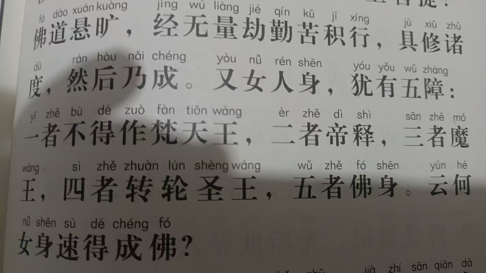
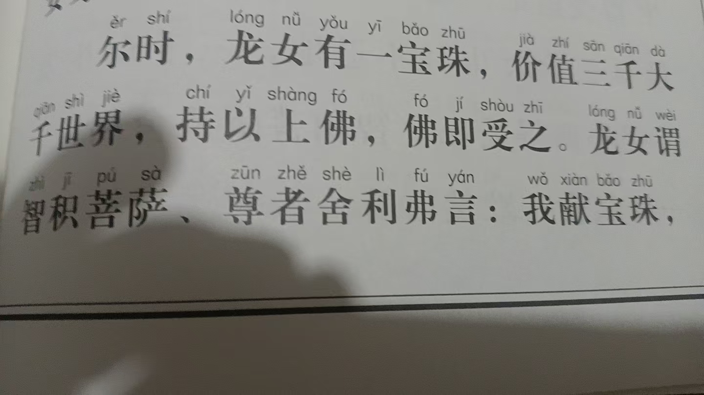
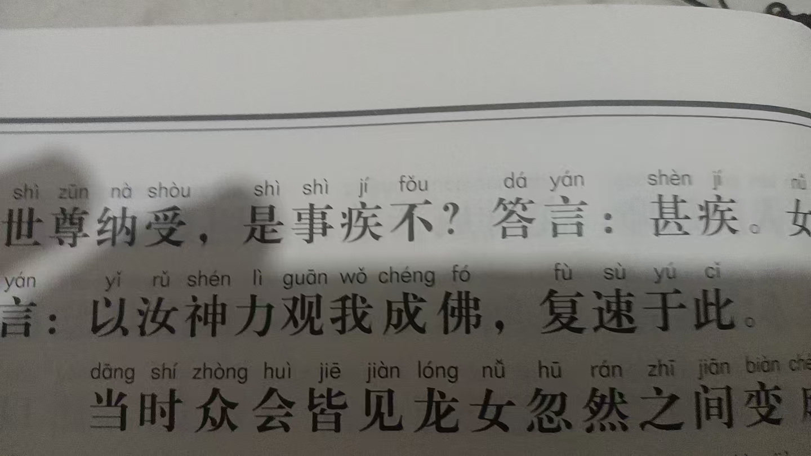

20260704龙女，不得男身，不能成就，不得做梵天王，不得帝释，不得魔王，不得转轮圣王，不得佛身，怎么成就的
修炼修行 原始对话记录读经学习中
坐中，想到，让儿子把见宝塔品，做成一个视频
思乡佛号，那不就是做出来了吗
思乡佛号，那是阿弥陀佛世界景象
明天带家人去济南看儿子去



龙女，不得男身，不能成就，不得做梵天王，不得帝释，不得魔王，不得转轮圣王，不得佛身，怎么成就的
就是献了一颗宝珠，价值三千大千世界
龙女问智积菩萨，舍利弗，我献宝珠，做的快不快，
太快了
迅速变成男子，
迅速成就
不行就是不行，承认了不行，还要改变策略继续
还要继续造业啊
自然定律，可不同于法律，只要想做死，自然定律，可以直到把他送走
这个可不是我吓唬人
[呲牙][呲牙]
憍昙弥，做佛，号，一切众生喜见如来
这样就记起来了
以前我读莲花经
只有火宅部分
这后半部分，第一次读
他的妻子，也成佛了
号，具足千万光相如来
[强][强][强]
一曰慈二曰俭三曰不敢为天下先
要想参悟，必须有足够长的时间打坐入静
感觉自己都没有了，只是空觉
表面功夫，还要深入
禅定
[强][强][强]
[强][强][强]
[强][强][强]
[强][强][强]
[强][强][强]
[强][强][强]
《楞严经》
“色心诸缘，及心所使，诸所缘法，唯心所现。汝身汝心，皆是妙明真精妙心中所现物。
法华经龙女成佛：一枚宝珠与"速疾成佛"
一、本页在讲什么
本页是读经受记的笔记：由《见宝塔品》想到做视频，转到龙女成佛，再到憍昙弥、佛妻的授记，末尾引《楞严经》"色心诸缘……唯心所现"。属经义随记。
二、龙女成佛的经文本事
《法华经·提婆达多品》说：娑竭罗龙王之女年方八岁，智慧利根。舍利弗质疑"女身垢秽"，不能成佛——此即标题所列"不得作梵天王、帝释、魔王、转轮圣王、佛身"之"五障"说。龙女于是献出宝珠，问"我献珠，世尊受得快不快？"众答"甚快"，龙女即于刹那之间变为男子，往南方无垢世界坐宝莲华成佛。本品还特意安排智积菩萨与舍利弗先后发问，用以衬托此事的殊胜与难信。
三、"献珠"的象征
- 宝珠：喻最珍贵的发心与功德；
- "快"与"顿"：以献珠之快，喻顿证；
- 转女成男：是当时语境下的方便说法，为破除"女身不能成佛"的执见。以"宝珠"比"发心"、以"献珠之速"比"证悟之疾"，是《法华》常用的譬喻手法。
四、记录提到的其他受记
《法华经·劝持品》中，佛为憍昙弥（佛姨母摩诃波阇波提）授记，将来成佛号"一切众生喜见如来"；为耶输陀罗（佛妻）授记，号"具足千万光相如来"。记录者说这些是"后半部分，第一次读"。这两处授记，正是《法华》"会三归一、人人成佛"思想的注脚。
五、记录中另外两段
其一引老子"一曰慈，二曰俭，三曰不敢为天下先"，说要参悟需长时间打坐入静、"感觉没有自己了，只是空觉"；其二引《楞严经》"色心诸缘，及心所使，诸所缘法，唯心所现。汝身汝心，皆是妙明真精妙心中所现物"。所谓"空觉"与"唯心所现"，都指向"能所双忘"的体验。
六、常见问题
问：龙女几岁成佛？ 经文作八岁。
问：为什么要"转女成男"？ 那是当时古印度社会观念的反映；经中以"速疾转身"来破除性别成佛的执见，重点在"顿证"，不在性别。
七、提醒
- 公案属佛经文学，宜作文化阅读；
- 记录者的打坐体会为个人经验，不承诺境界；
- 请以正规经本与注疏为准。